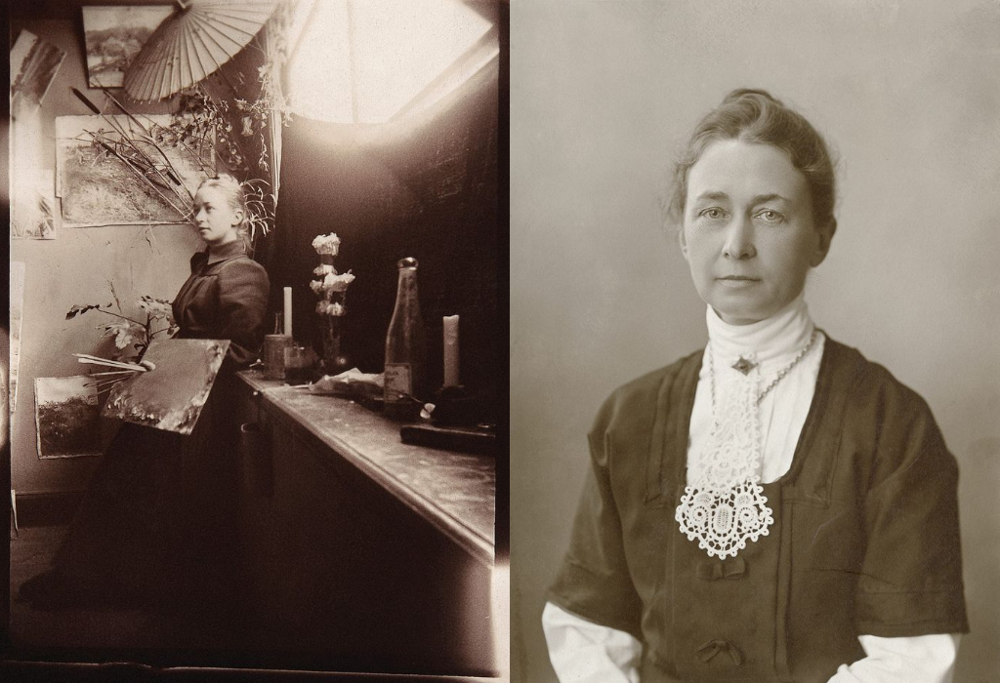

hola aca hablamos sobre mi
intro sobre mi y que hago y bla bla blaaa

aca ya no sabria qu mas decir creoo
y aca menos
Su objetivo era reflejar este mundo espiritual en sus pinturas, pero la sociedad de su tiempo no estaba preparada para aceptar tales obras, especialmente las de una mujer que podría haber sido tachada de bruja. Por ello, mientras continuaba sus experimentos de manera oculta, también pintaba obras más convencionales para ganarse la vida.
Legado
El legado de Hilma af Klint sigue creciendo a medida que su trabajo es más valorado en el contexto del arte moderno y contemporáneo. Su capacidad para combinar el arte con la espiritualidad y su innovación en la abstracción han dejado una marca indeleble en la historia del arte.